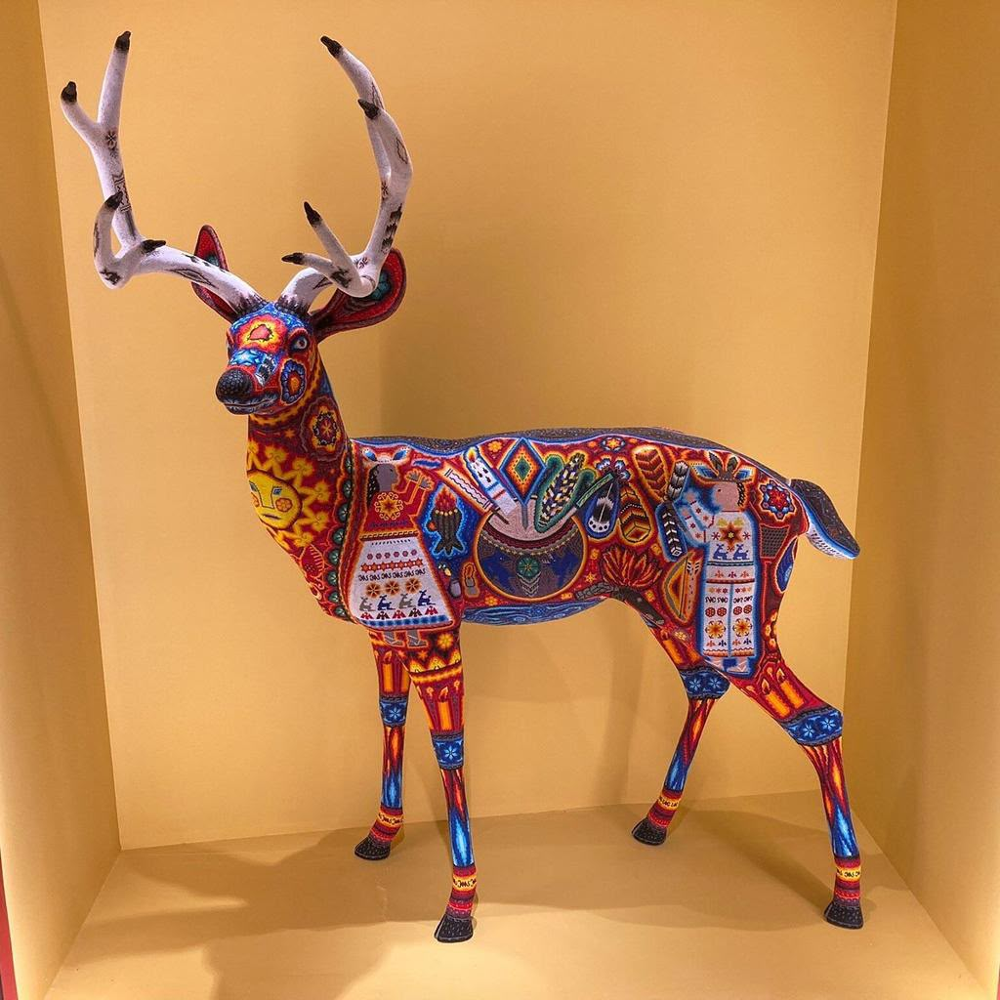
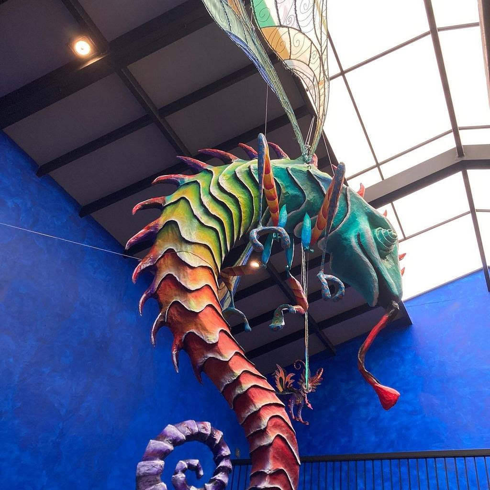

El Museo de Arte Popular de Valle de Bravo (MUAPO) es un espacio cultural dedicado a conservar, exhibir y promover las tradiciones y expresiones artísticas de México. Su objetivo es dar a conocer la riqueza del arte popular mexicano y reconocer el trabajo de los artesanos de diferentes comunidades.

Dentro del museo podemos encontrar diferentes expresiones del arte popular, como: Textiles: prendas y tejidos elaborados con técnicas tradicionales. Arte religioso: figuras e imágenes elaboradas por artesanos. Jícaras decoradas: recipientes de origen natural decorados con diferentes diseños. Artesanías de madera: objetos tallados y decorados a mano. Cocina tradicional: objetos relacionados con las costumbres gastronómicas mexicanas. Arte relacionado con la muerte: piezas que representan las tradiciones mexicanas de recordar a los seres queridos.
